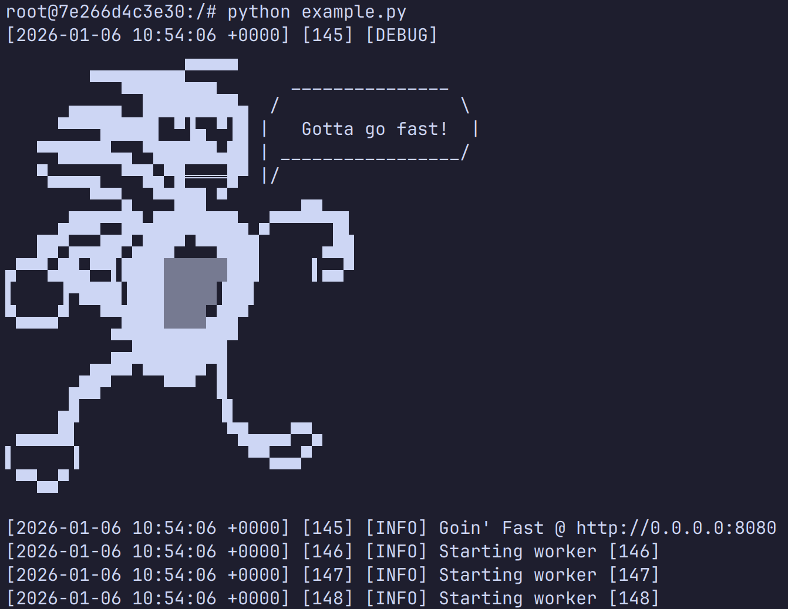

Раздолбайский дух Sanic

Обновлял свои сэмплы простеньких API-сервачков. Версия на Sanic отказывалась работать, так что закатал рукава и пошёл читать их маны. Захожу на сайт, а тут… Батюшки! Всё чинно, благородно, серьёзно так. Я отлично помню, что рисовал их дебаг в консоли. Эх, куда дели раздолбайский дух? :)